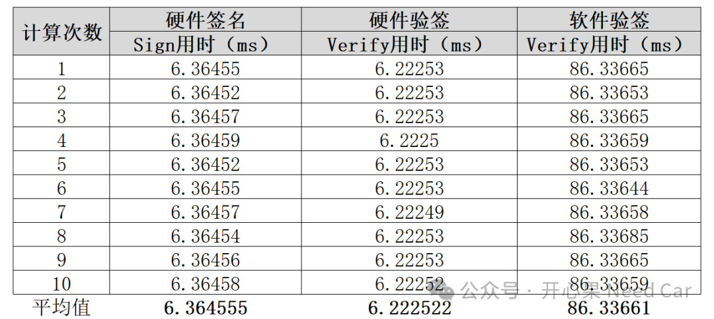
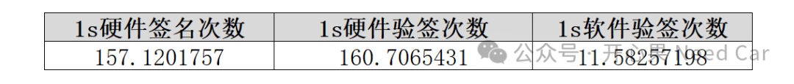
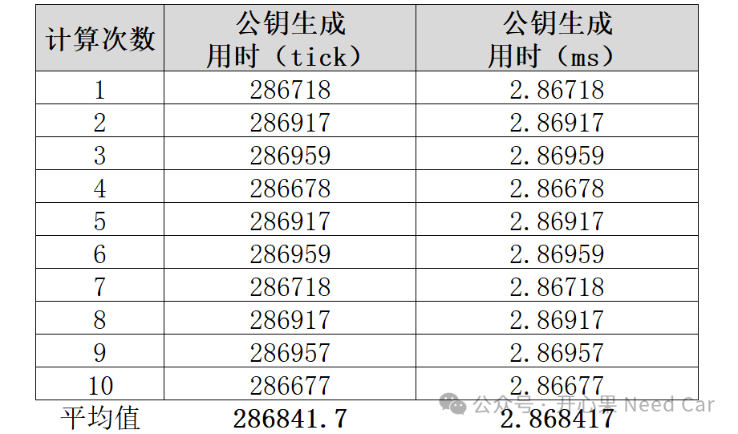

开心果 Need Car · 2025-02-08T06:36:00+08:00 · 微信原文
前文《信息安全：Ed25519性能评估及实践细节思考（上）》提到，使用Ed25519进行软件验签时，性能是差强人意的。所以，果断进行了硬件开发，本文，针对硬件加速后的Ed25519验签性能进行统计，具象化其性能，也让从事信息安全的小伙伴有一个更清晰的认知。
如果更关注Ed25519的签名和验签实现细节，可以参考前文。
1、Ed25519签名和验签性能统计
讨论性能时，必须交代清楚基于的平台和统计方法，本文基于Tc397芯片，
HSM核运行主频100MHz。统计方法可以参考前文《信息安全，HASH（MD5、SHA1、SHA256）性能到底怎样？》。
Ed25519签名和验签性能统计数据如下：



硬件配合的软件部分是否最优
往期精彩回顾
包含信息安全、SWAP（A/B分区）功能的Bootloader开发思考